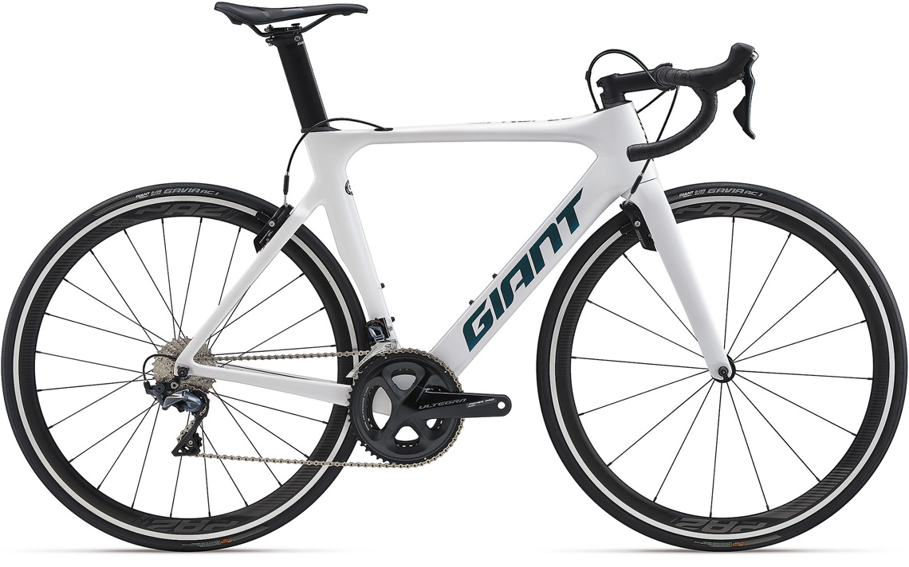
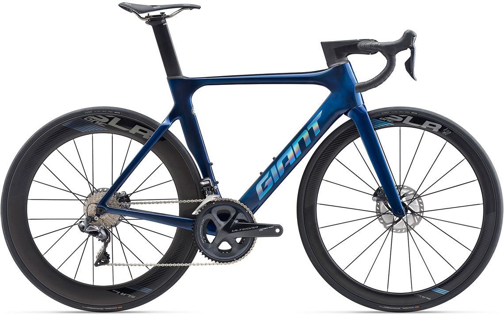
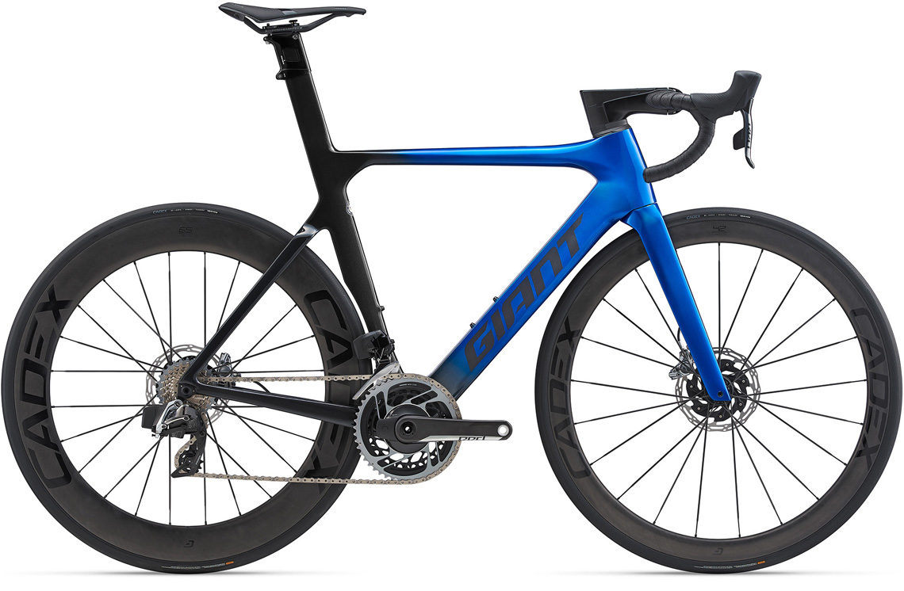

1972年に台湾でOEMメーカーとして創業。1981年に自社ブランド「ジャイアント」を立ち上げ、現在は台湾を筆頭とする9つの自社工場で自転車を生産し、世界13拠点と各国代理店から年間600万台のバイクを出荷する世界最大手の自転車メーカーとして世界中から評価される。生産台数だけでなく、技術力もずば抜けて高く、アルミもカーボン素材も自社調達できる強みを生かしたコストパフォーマンスも魅力。
世界最大の総合自転車メーカーだけに、ほかのブランドにくらべ圧倒的なコストパフォーマンスの高さも大きな魅力。ラインナップは多岐にわたり、ツール・ド・フランスなどのプロロードレースで活躍するトップグレードのレーシングバイクから、MTB、クロスバイク、シティサイクルまで幅広く展開。特に高級レーシングブランドとしての実力も高く、1998年よりプロロードチームにフレームの供給を開始し、そのフィードバックを活かした開発を続けている。もちろん、ロードバイクだけでも多数のシリーズ・ラインナップを誇り、舗装路を想定したモデルや、未舗装路向けのモデル、素材違いのアルミフレームモデルなど、グレードや目的によって最適なものを選ぶことができる。
約8万円〜